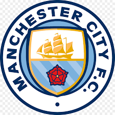
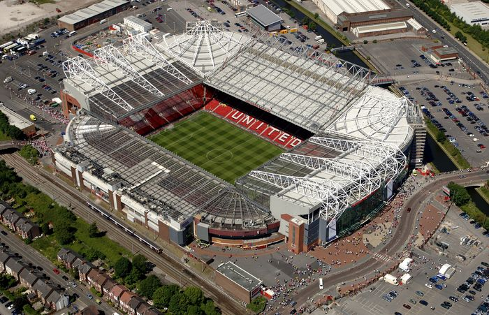

Man united
Manchester United Football Club is a professional football club based in Old Trafford, Greater Manchester, England, that competes in the Premier League.
View detail

Man City
Manchester City Football Club is an English football club based in Etihad stadium,ENgland that competes in the Premier League, the top flight of English football.
View detail
OLD TRAFFORD

Old Trafford is a football stadium in Old Trafford, Greater Manchester, England, and the home of Manchester United. With a capacity of 74,140 seats, it is the largest club football stadium in the United Kingdom, and the eleventh-largest in Europe.